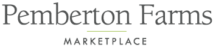

Experience
I have worked at multiple companies in different positions. I do seasonal work for
Pemberton Farms, where I help
Customers choose and transport Christmas trees. I also worked as a
social media manager for the Cambridge
Non-Profit Coalition, in which I managed and promoted a
summer giveaway event that the coalition was holding. I had a two-week internship with MaibornWolff,
a company based in Munich, Germany, where I developed a program that utilized Secure Shell
connections and the telegram API to detect errors in a client's program and provide feedback. In
addition, I aided my supervisor in incorporating AI into info management by utilizing the OpenAI
API. In the summer of 2024, I returned to MaibornWolff, and explored web developement and other aspects of software development within multiple different departments. As I mentioned previously, I also just finished a year-long internship at Audible, where I worked in the QA department as an SDE Intern. During my time there I developed and deployed a metrics dashboard using AWS CloudWatch and IAM, improving visibility into system performance for engineering teams.
I also migrated an internal test suite to Playwright Hydra, replacing the previous system for service-level QA automation. In addition to that, I
wrote internal documentation outlining dashboard features, metrics, and improvement proposals
